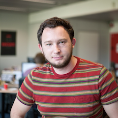

Let's talk Gossip!
Tutorial: Distributed System Configuration using Chef and Gossip Protocols
Radoslaw GruchalskiDistributed Programming Specialist
Let's talk Gossip!
In computer science, gossip is a communication mechanism in which computers form groups and exchange the distributed state information amongst each other. Some of most common use cases are: distributed databases, distributed configuration systems and data distribution services. This talk will take you to the world of gossip and its application to real-world problems. We will discover what makes gossip work, how to build a gossip system and discuss gossiperl - an Erlang implementation of a gossip message bus for distributed applications. The talk will be followed with a demo of zero-configuration gossip application running on a cluster of Raspberry Pi.
Talk objectives:
After this talk the attendee will have an overview of what gossip communication is, what makes gossip communication work, where and how to apply it.
Target audience:
Software engineers interested in building scalable, multi-technology systems.
SlidesVideo
Tutorial: Distributed System Configuration using Chef and Gossip Protocols
We will build a simple distributed system consisting of a number of different big data components underpinned by a gossip overlay. Components that depend on each other will be automatically reconfigured in response to machines joining and leaving the overlay. We will build a very simple conceptual data processing pipeline consisting of Apache ZooKeeper, Apache Kafka, Apache Samza and an ingest mechanism.
This tutorial will take the attendee into the practical world of gossip service discovery.
Tutorial objectives:
- introduce dynamic service discovery concepts
- show practicals of gossip based systems
Target audience:
- beginner to intermediate; an open mind is a desired skill
About Radoslaw
Radoslaw Gruchalski is a software engineer with 15 years of experience under his belt. He is a computer polyglot: JavaScript, ActionScript, Java, C#, F#, Ruby, Python, Erlang, C, C++, are only few languages he had the opportunity to work with. He has personal preferences regarding languages and methodologies, but he uses the best tool for the job. Radoslaw is currently specialising in distributed programming. He spent last 3 years working with, so called, big data and applying gossip communication protocols to some of the problems arising when developing big data systems. GitHub:
radekg
Twitter:
@rad_g